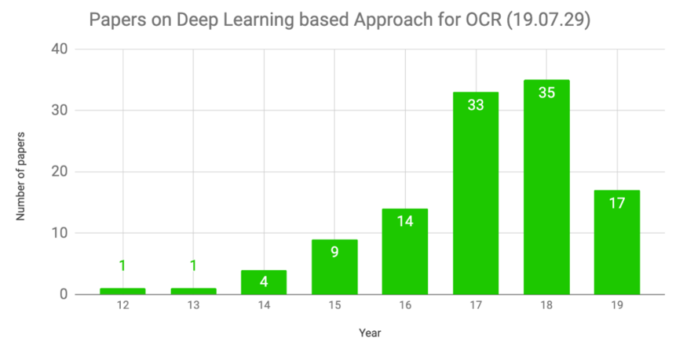
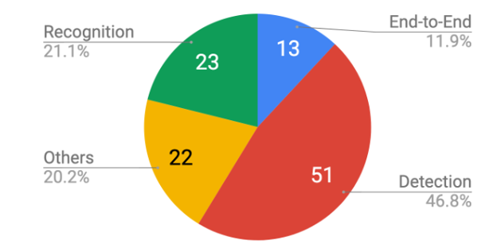

1. 概述¶
随着多媒体以及互联网技术的快速发展，人们获取图片的方式越来越多，怎样从丰富的图片中摘取自己需要的信息就变得越来越重要。而随着人工智能和深度学习技术的发展，高效读取自然场景中文本的应用需求也急剧增加，自然场景文本定位和识别的应用场景也越来越多，如扫描版财务合同的识别、翻译机上的拍照翻译功能、各种证件识别等等。
 10 11 12 13 14 15 16 17 18 19 | def adjust_height(h):
"""
调整box高
"""
heights = [11, 16, 23, 33, 48, 68, 97, 139, 198, 283] # the heigts of the code
N = len(heights)
for i in range(N - 1):
if h <= heights[i] + heights[i] * 0.44 / 2:
return heights[i]
return h
|
注解
This function is not suitable for sending spam e-mails.
警告
This function is not suitable for sending spam e-mails.
文本行检测
文本行识别
版面分析